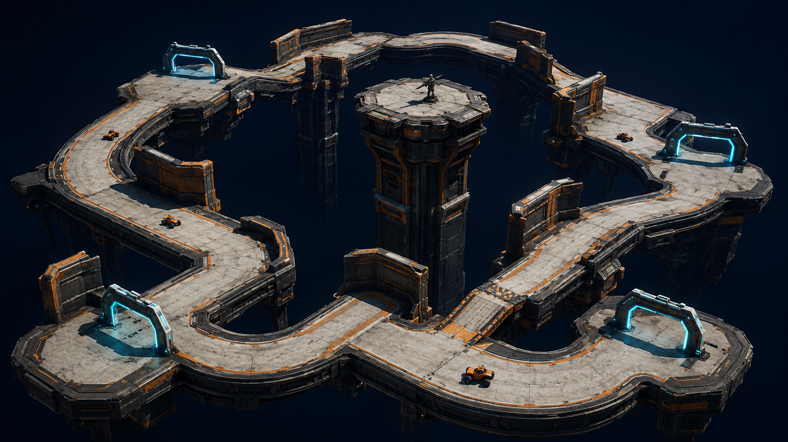
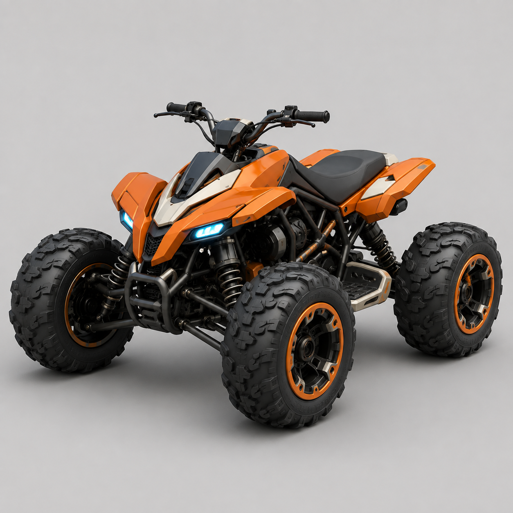
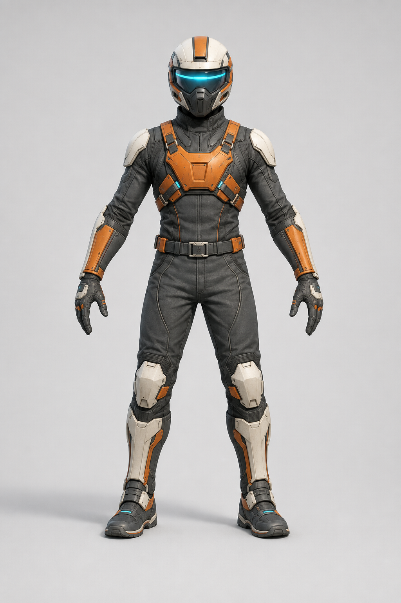
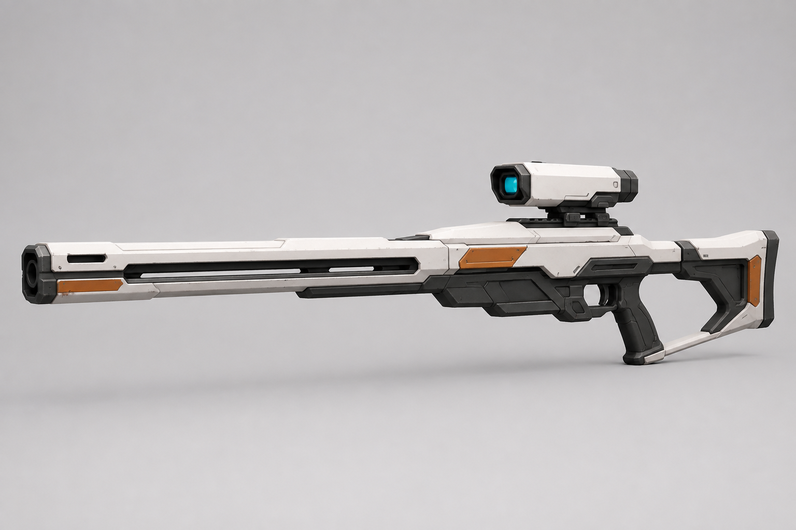
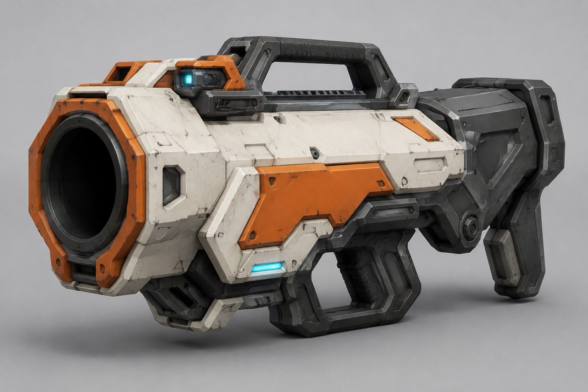
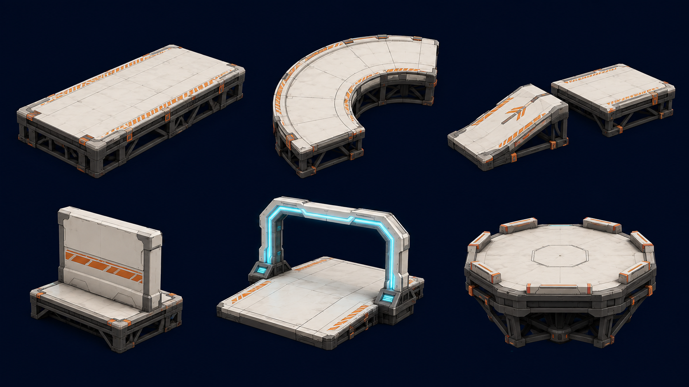

Race the edge. Dodge the tower. A floating ATV gauntlet where the next checkpoint is your way back.

The floating loop, central attacker, and exposed driving lanes.

The player vehicle. Review its stance, silhouette, and riding position.

A shared competitor base for drivers and the marksman.

A long, light silhouette for precision attacks.

A heavier silhouette for explosive attacks and knockback.

A construction reference for ramps, cover, gates, and the tower.